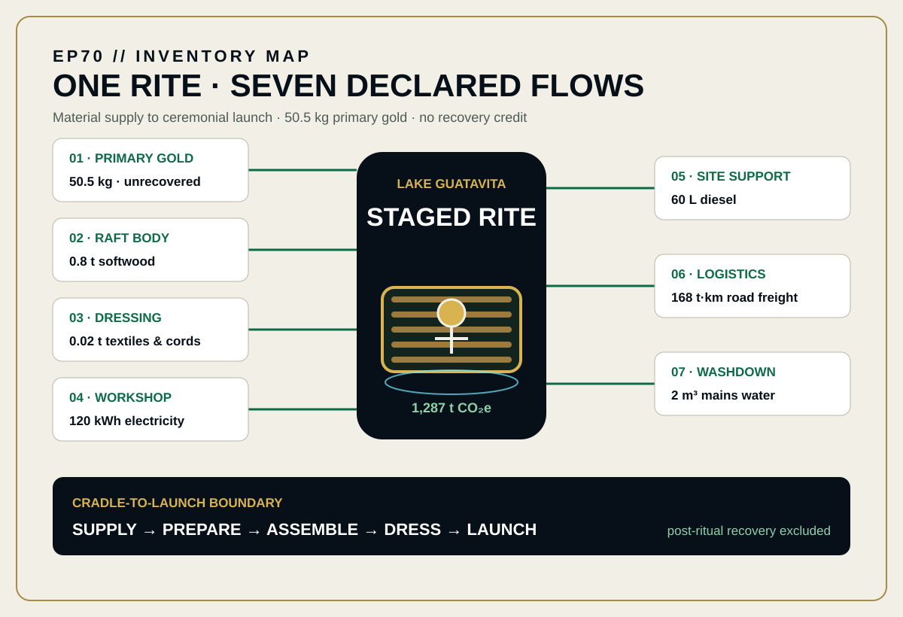
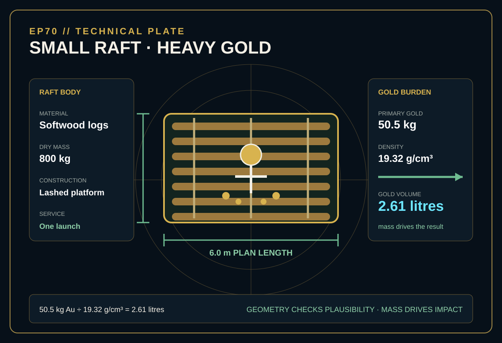
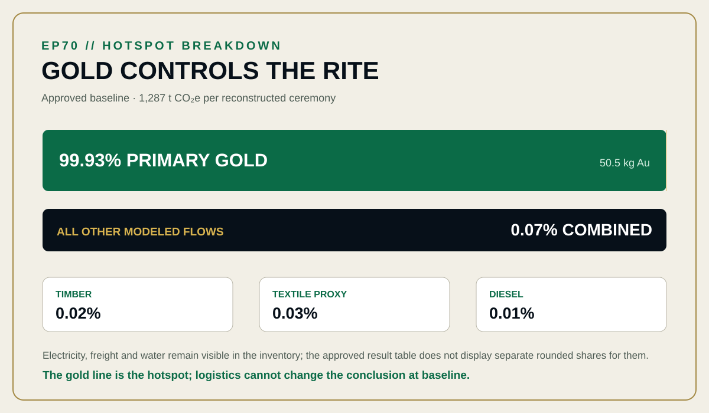

EPISODE #70 · MYTHS & LEGENDS
El Dorado
What is the footprint of one golden investiture rite?
Narrative reconstruction — not a verified product footprint.
THE SUBJECT
A golden rite. A measured system.
The approved episode does not model a literal city of gold. It reconstructs one staged investiture rite at Lake Guatavita, anchored to the Muisca raft tradition, and follows the physical supply system through one ceremonial launch.
The raft is an engineering approximation: a 6.0 × 3.0 m lashed softwood platform with an 800 kg mass. The 50.5 kg gold burden is assigned as unrecovered ceremonial use. Human labour, music, lake land-use change, cultural value, legality and post-ritual recovery remain outside the model.
6.0 × 3.0 m raft
The physical reconstruction uses an 800 kg lashed softwood platform.
50.5 kg primary gold
Dust and offerings are assigned as unrecovered ceremonial use.
99.93% gold hotspot
One inventory line overwhelms every minor material, energy and logistics flow.
One event · one launch
The boundary ends at ceremonial launch, with no reuse, recovery or salvage credit.
VISUAL MODEL
A short inventory carrying a mine-sized burden
The inventory map keeps seven declared flows inside the cradle-to-launch boundary. The technical plate freezes raft geometry and the mass-to-volume check for the gold burden.


DETAILED LIFE CYCLE INVENTORY
Gold is one line. Gold is the model.
Climate contributions below are direct quantity × factor products from the approved episode, rounded for web presentation. The approved headline remains 1,287 t CO₂e.
| Stage | Component / activity | Activity data | Climate change | Modelling basis |
|---|---|---|---|---|
| Material supply | Primary gold dust and offerings | 50.5 kg | 1,285.882 t CO₂e · 99.93% | S1 · 25,463 kg CO₂e/kg. S&P Global 2024 primary-gold mine emissions-intensity proxy; unrecovered ritual gold burden. |
| Raft construction | Timber log raft | 0.8 t | 0.216 t CO₂e · 0.02% | D1 · 269.5 kg CO₂e/t. DEFRA 2026 wood material-use factor; lashed raft body. |
| Ceremonial dressing | Textiles, cords and cloth | 0.02 t | 0.446 t CO₂e · 0.03% | D2 · 22,310 kg CO₂e/t. DEFRA 2026 textile proxy. |
| Workshop | Fabrication electricity | 120 kWh | 0.022 t CO₂e · <0.01% | D3–D6 · 0.184 kg CO₂e/kWh. DEFRA 2026 electricity composite. |
| Site support | Diesel for site equipment | 60 L | 0.192 t CO₂e · 0.01% | D7–D8 · 3.195 kg CO₂e/L. DEFRA 2026 diesel including WTT. |
| Logistics | Road freight to lake staging point | 168 t·km | 0.041 t CO₂e · <0.01% | D9–D10 · 0.243 kg CO₂e/t·km. DEFRA 2026 road freight including WTT; 1.4 t × 120 km. |
| Washdown | Mains water | 2 m³ | Not separately disclosed | The approved LCI includes this flow, but its published factor table does not display a numerical water factor or separate contribution. |
| Approved baseline total | 1,287 t CO₂e | Per reconstructed ceremony, at the precision reported in the approved episode. | ||
Included
Primary gold production burden, timber raft, textiles and cords, workshop electricity, site diesel, road freight and washdown water.
Excluded
Human labour and music, lake land-use change, post-ritual recovery, cultural value and legality.
Cut-off event
The model stops at completed ceremonial launch. No avoided production, recycling or salvage credit is applied.
Proxy disclosure
DEFRA 2026 is used for representative minor flows. Gold uses a declared primary-mine emissions-intensity proxy because DEFRA has no gold material factor.
HOTSPOT
One number dominates the rite
Primary gold contributes 99.93% of the approved baseline. Timber, textiles, diesel, electricity, freight and water contribute 0.07% combined.

Main result
1,287 t CO₂e
One reconstructed investiture rite from supply to launch.
Primary gold
99.93%
The dominant contribution in the approved baseline.
All other flows
0.07%
Minor materials, energy, diesel, freight and water combined.
Gold volume
2.61 litres
50.5 kg at the declared density of 19.32 g/cm³.
Recovery credit
None
The offering is modeled as unrecovered ceremonial use.
SENSITIVITY · GOLD MASS
Mass changes everything
Restricted rite · 10.5 kg: 268 t CO₂e (−79%).
Baseline rite · 50.5 kg: 1,287 t CO₂e.
Lavish rite · 100.5 kg: 2,560 t CO₂e (+99%).
Only gold mass changes. Timber, energy, freight and water remain fixed from the baseline model.
SENSITIVITY · GOLD FACTOR
Source choice shrinks the myth
Low-carbon mine · 2,588 kg/kg: 132 t CO₂e.
2023 average · 25,463 kg/kg: 1,287 t CO₂e.
Stress case · 31,829 kg/kg: 1,608 t CO₂e.
The gold factor is the only tested data parameter in this sensitivity. The episode remains a narrative reconstruction, not a verified product footprint.
INTERPRETATION
Uncertainty sits in the proxy
Gold mass and gold intensity move the footprint far more than logistics. Minor flows remain audited, but neither the 120 km freight assumption nor the raft body can displace primary gold as the baseline hotspot.
THE VERDICT
“A golden rite can carry a mine-sized footprint.”